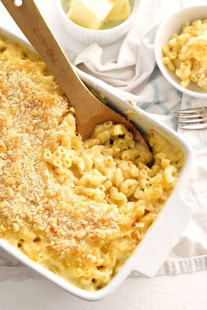

Homemade Mac and Cheese

So good you'll sew your ass shut.
Warning: Rectal embroidery may not be for you. Reader discretion
is strongly advised.
What You Need
The Food
- Macaroni Noodles - 1 lb
- All-Purpose Flour - 1/2 cup
- Butter - 6 tbsps
- Milk - 5 cups
- Cheddar Cheese - 24oz
- Colby Jack Cheese - 8oz
- Mozzarella Cheese - 4 oz
The Seasoning
- Salt - 1 tsp
- Ground Black Pepper - 1/2 tsp
- Dry Mustard Powder - 1 tsp
- Paprika - 1/4 tsp
- Garlic Powder - 2 tbsps
- Onion Powder - 1 tsp
- Italian-Style Bread Crumbs
The Process
- Set oven to 375 degrees
- While oven heats up, boil noodles al dente, then strain the noodles
- In a medium saucepan over medium heat, melt the butter. Then, add the flour
and the seasoning ingredients and whisk for a couple of minutes.
- Add milk to the saucepan, stirring constantly with the whisk. Continue to stir
and whisk until sauce is thick enough to coat the back of a spoon.
- Remove sauce from heat and add MOST of the cheese. Save some for later!
- Put noodles in an oven dish and poor sauce over the noodles. Gently toss
the noodles until they are all coated with sauce. Sprinkle the reserve cheese
over top of the dish.
- Bake in the oven for 25 - 30 minutes. Halfway through baking, remove from the oven
to sprinkle a layer of bread crumbs, and resume baking.
Feeds 4-6 people, or maybe 2 teenage boys...3 if you're lucky.